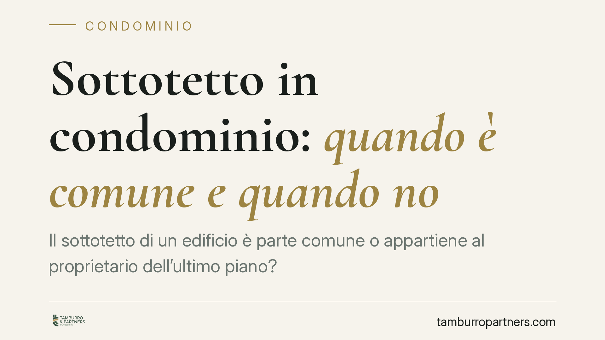

Sottotetto in condominio: quando è comune e quando no
Il sottotetto di un edificio è parte comune o appartiene al proprietario dell'ultimo piano? La risposta non è automatica: dipende dalla funzione concreta del vano e da ciò che dicono i titoli di proprietà. Il catasto, da solo, non basta. Vediamo i criteri che contano davvero e come muoversi prima di una lite condominiale.

Il problema: a chi appartiene il sottotetto
Il sottotetto è lo spazio compreso tra il solaio dell'ultimo piano e la copertura dell'edificio. La sua proprietà è una delle questioni più ricorrenti nei conflitti tra condomini e proprietario dell'ultimo piano, perché da essa dipende chi può utilizzare il vano, chi ne sopporta le spese e chi può eventualmente trasformarlo.
La risposta non è scontata. Non esiste una regola che assegni il sottotetto all'uno o agli altri in modo meccanico. Occorre partire dalla sua funzione concreta e dai titoli di proprietà.
Inquadramento normativo
Il riferimento è l'articolo 1117 del Codice civile, che elenca le parti dell'edificio presunte comuni: tra queste rientrano le strutture che servono all'uso e al godimento collettivo. Si tratta di una presunzione relativa (iuris tantum): vale fino a prova contraria. Il "titolo contrario" è, in genere, l'atto di acquisto o il regolamento contrattuale che attribuisce espressamente il vano a un singolo proprietario.
Su questa base la giurisprudenza distingue due situazioni.
Il sottotetto è pertinenza tecnica quando ha la sola funzione di proteggere l'ultimo piano dal caldo, dal freddo e dall'umidità — una camera d'aria tra l'appartamento sottostante e il tetto. In questo caso tende a essere considerato di proprietà esclusiva del proprietario dell'ultimo piano, perché serve soltanto il suo alloggio.
Il sottotetto è invece bene suscettibile di uso autonomo quando, per caratteristiche strutturali, può essere destinato a usi distinti: deposito, stoccaggio, o addirittura spazio praticabile. In questo caso riemerge la presunzione di condominialità dell'art. 1117 c.c., salvo titolo contrario.
Il criterio dell'altezza e il ruolo del catasto
Tra i parametri che la giurisprudenza valorizza c'è l'altezza del vano. Un sottotetto con altezza tale da consentire la permanenza di persone o lo stoccaggio di beni è un indizio forte a favore di un uso autonomo, e quindi della natura comune. Al contrario, un'intercapedine schiacciata, non praticabile, resta più facilmente una pertinenza tecnica.
Due precisazioni, perché qui si concentrano gli errori più comuni.
La prima: l'assenza di pavimentazione finita non è di per sé decisiva. Ciò che conta è l'idoneità strutturale all'uso, non il grado di rifinitura.
La seconda, essenziale: il dato catastale ha valenza fiscale, non probatoria della proprietà. Il fatto che il sottotetto risulti censito in un certo modo, o accatastato insieme all'appartamento sottostante, non prova a chi appartenga. La proprietà si dimostra con i titoli, non con le mappe catastali.
Una nota di metodo. Alcune fonti divulgative riferiscono pronunce recenti secondo cui l'altezza sarebbe l'elemento decisivo. Preferiamo non ancorare questo contributo a estremi di sentenza non verificabili: su una materia dove la soluzione dipende dal caso concreto, è più utile ragionare sui criteri consolidati che su una singola massima da confermare.
Implicazioni pratiche
Per il proprietario dell'ultimo piano, la lettura "altezza e uso autonomo" significa che non può dare per scontata l'esclusività del sottotetto solo perché vi accede comodamente o perché lo usa da anni. L'uso prolungato, da solo, non fonda la proprietà.
Per gli altri condomini, significa che un sottotetto praticabile può essere una risorsa comune — con riflessi su spese, decisioni assembleari ed eventuali interventi.
In entrambi i casi, la partita si gioca sui documenti: atti di provenienza, regolamento di natura contrattuale, piani allegati agli acquisti.
Cosa fare in concreto
- Recuperate i titoli di proviazione: atti di acquisto di tutte le unità e regolamento condominiale, verificando se è contrattuale e se cita espressamente il sottotetto.
- Misurate e documentate il vano: altezza, accessi, impianti, destinazione reale. Un rilievo tecnico vale più di un'opinione.
- Non fondatevi sul catasto: usatelo come indizio descrittivo, mai come prova della proprietà.
- Verificate l'uso storico e gli accessi: chi entra, come, da quanto tempo. Serve a inquadrare la situazione, non a sostituire i titoli.
- Prima di trasformare o rivendicare, chiedete un parere: un intervento o una delibera adottati sul presupposto sbagliato espongono a contenzioso e a ripristino.
La regola operativa è una sola: nel dubbio sulla natura del sottotetto, si parte dai titoli e dalla funzione effettiva del vano, non dalle apparenze.
---
Contributo informativo a cura di Tamburro & Partners Avvocati – Avv. Giuseppe Tamburro. Non costituisce parere legale.
Ogni condominio ha una storia a sé.
Se gestisci un'amministrazione e vuoi un confronto su una specifica questione condominiale, scrivi allo studio. Ti rispondiamo entro un giorno lavorativo.